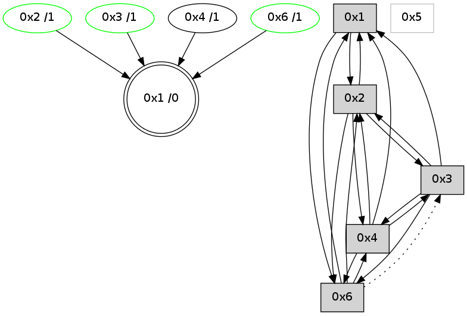

>> << IDX [start] -100 -25 -5 +0 +5 +25 +100 [725.024971008]
 Previous packets
----------------------------------------------------------------------
720.103895 beacon01(adaf) #0 coord=01,02,05,03,04,06 cycle=432.0ms assoc
-- color-indic=0 64 f4 3d
720.113855 beacon02(adaf) #0 coord=01,02,05,03,04,06 cycle=432.0ms assoc 64 a5 c2
720.123856 beacon05(adaf) #0 coord=01,02,05,03,04,06 cycle=432.0ms assoc 64 03 e8
720.133857 beacon03(adaf) #0 coord=01,02,05,03,04,06 cycle=432.0ms assoc 64 9f cc
720.143855 beacon04(adaf) #0 coord=01,02,05,03,04,06 cycle=432.0ms assoc 64 39 e6
720.153856 beacon06(adaf) #0 coord=01,02,05,03,04,06 cycle=432.0ms assoc 64 4d fa
720.165546 [Hello(2): seq=1013 sym=4,6,1,3 sysInfo= stat=4:0,0,0,0/6:6,0,2,1/1:14,0,9,0/3:7,0,3,6]
720.168292 [STC(1) #0.33 to-color d=0]
----------------------------------------------------------------------
720.596002 beacon01(adaf) #0 coord=01,02,05,03,04,06 cycle=432.0ms assoc
-- color-indic=0 64 b9 3a
720.605964 beacon02(adaf) #0 coord=01,02,05,03,04,06 cycle=432.0ms assoc 64 e8 c5
720.615963 beacon05(adaf) #0 coord=01,02,05,03,04,06 cycle=432.0ms assoc 64 4e ef
720.625963 beacon03(adaf) #0 coord=01,02,05,03,04,06 cycle=432.0ms assoc 64 d2 cb
720.635964 beacon04(adaf) #0 coord=01,02,05,03,04,06 cycle=432.0ms assoc 64 74 e1
720.645964 beacon06(adaf) #0 coord=01,02,05,03,04,06 cycle=432.0ms assoc 64 00 fd
720.657751 [STC(2)->1 #0.33 stable,to-color d=1]
720.660341 [TreeStatus(2)-.->1 #0.33 stable child=1]
720.661601 [Hello(4): seq=523 sym=1,2 asym=6 sysInfo= stat=1:11,0,12,0/2:7,0,1,2/6:1,0,0,0]
720.663519 [Hello(3): seq=521 sym=4,2,1,6 sysInfo=hasWarning stat=4:0,0,0,0/2:6,0,0,1/1:15,0,8,0/6:11,0,11,3]
720.665318 [STC(4)->1 #0.33 to-color d=1]
720.666542 [STC(6)->1 #0.33 stable,to-color d=1]
720.668502 [STC(3)->1 #0.33 stable,to-color d=1]
720.670525 [Hello(1): seq=422 sym=2,4,6 sysInfo= stat=2:9,0,6,7/4:0,0,2,0/6:1,0,2,2]
720.675709 [TreeStatus(3)-.->1 #0.33 stable child=1]
720.677100 [TreeStatus(6)-.->1 #0.33 stable child=1]
----------------------------------------------------------------------
721.088110 beacon01(adaf) #0 coord=01,02,05,03,04,06 cycle=432.0ms assoc
-- color-indic=0 64 7d 55
721.098072 beacon02(adaf) #0 coord=01,02,05,03,04,06 cycle=432.0ms assoc 64 2c aa
721.108071 beacon05(adaf) #0 coord=01,02,05,03,04,06 cycle=432.0ms assoc 64 8a 80
721.118071 beacon03(adaf) #0 coord=01,02,05,03,04,06 cycle=432.0ms assoc 64 16 a4
721.128072 beacon04(adaf) #0 coord=01,02,05,03,04,06 cycle=432.0ms assoc 64 b0 8e
721.138072 beacon06(adaf) #0 coord=01,02,05,03,04,06 cycle=432.0ms assoc 64 c4 92
721.149788 [Hello(2): seq=1014 sym=4,6,1,3 sysInfo= stat=4:1,0,1,0/6:7,0,3,2/1:15,0,10,0/3:7,0,4,7]
----------------------------------------------------------------------
721.580218 beacon01(adaf) #0 coord=01,02,05,03,04,06 cycle=432.0ms assoc
-- color-indic=0 64 31 e5
721.590180 beacon02(adaf) #0 coord=01,02,05,03,04,06 cycle=432.0ms assoc 64 60 1a
721.600180 beacon05(adaf) #0 coord=01,02,05,03,04,06 cycle=432.0ms assoc 64 c6 30
721.610180 beacon03(adaf) #0 coord=01,02,05,03,04,06 cycle=432.0ms assoc 64 5a 14
721.620180 beacon04(adaf) #0 coord=01,02,05,03,04,06 cycle=432.0ms assoc 64 fc 3e
721.630182 beacon06(adaf) #0 coord=01,02,05,03,04,06 cycle=432.0ms assoc 64 88 22
721.641883 [Hello(4): seq=524 sym=1,2 asym=6 sysInfo= stat=1:12,0,12,0/2:8,0,1,2/6:1,0,1,1]
721.644953 [Hello(1): seq=423 sym=2,4,6 sysInfo= stat=2:10,0,6,7/4:0,0,2,0/6:1,0,2,3]
----------------------------------------------------------------------
722.072326 beacon01(adaf) #0 coord=01,02,05,03,04,06 cycle=432.0ms assoc
-- color-indic=0 64 f5 8a
722.082286 beacon02(adaf) #0 coord=01,02,05,03,04,06 cycle=432.0ms assoc 64 a4 75
722.092286 beacon05(adaf) #0 coord=01,02,05,03,04,06 cycle=432.0ms assoc 64 02 5f
722.102289 beacon03(adaf) #0 coord=01,02,05,03,04,06 cycle=432.0ms assoc 64 9e 7b
722.112288 beacon04(adaf) #0 coord=01,02,05,03,04,06 cycle=432.0ms assoc 64 38 51
722.122288 beacon06(adaf) #0 coord=01,02,05,03,04,06 cycle=432.0ms assoc 64 4c 4d
722.134027 [Hello(2): seq=1015 sym=4,6,1 sysInfo= stat=4:1,0,1,0/6:8,0,3,2/1:0,0,10,0]
----------------------------------------------------------------------
722.564433 beacon01(adaf) #0 coord=01,02,05,03,04,06 cycle=432.0ms assoc
-- color-indic=0 64 ab eb
722.574394 beacon02(adaf) #0 coord=01,02,05,03,04,06 cycle=432.0ms assoc 64 fa 14
722.584393 beacon05(adaf) #0 coord=01,02,05,03,04,06 cycle=432.0ms assoc 64 5c 3e
722.594395 beacon03(adaf) #0 coord=01,02,05,03,04,06 cycle=432.0ms assoc 64 c0 1a
722.604394 beacon04(adaf) #0 coord=01,02,05,03,04,06 cycle=432.0ms assoc 64 66 30
722.614395 beacon06(adaf) #0 coord=01,02,05,03,04,06 cycle=432.0ms assoc 64 12 2c
722.626035 [Hello(4): seq=525 sym=1,2 sysInfo= stat=1:13,0,12,0/2:9,0,1,2]
722.628783 [Hello(1): seq=424 sym=2,4,6 sysInfo= stat=2:11,0,6,7/4:0,0,2,0/6:1,0,2,3]
----------------------------------------------------------------------
723.056541 beacon01(adaf) #0 coord=01,02,05,03,04,06 cycle=432.0ms assoc
-- color-indic=0 64 6f 84
723.066502 beacon02(adaf) #0 coord=01,02,05,03,04,06 cycle=432.0ms assoc 64 3e 7b
723.076502 beacon05(adaf) #0 coord=01,02,05,03,04,06 cycle=432.0ms assoc 64 98 51
723.086502 beacon03(adaf) #0 coord=01,02,05,03,04,06 cycle=432.0ms assoc 64 04 75
723.096503 beacon04(adaf) #0 coord=01,02,05,03,04,06 cycle=432.0ms assoc 64 a2 5f
723.106503 beacon06(adaf) #0 coord=01,02,05,03,04,06 cycle=432.0ms assoc 64 d6 43
723.118194 [Hello(2): seq=1016 sym=4,6,1,3 sysInfo= stat=4:1,0,1,0/6:9,0,3,2/1:1,0,10,0/3:0,0,0,0]
----------------------------------------------------------------------
723.548648 beacon01(adaf) #0 coord=01,02,05,03,04,06 cycle=432.0ms assoc
-- color-indic=0 64 23 34
723.558609 beacon02(adaf) #0 coord=01,02,05,03,04,06 cycle=432.0ms assoc 64 72 cb
723.568608 beacon05(adaf) #0 coord=01,02,05,03,04,06 cycle=432.0ms assoc 64 d4 e1
723.578610 beacon03(adaf) #0 coord=01,02,05,03,04,06 cycle=432.0ms assoc 64 48 c5
723.588609 beacon04(adaf) #0 coord=01,02,05,03,04,06 cycle=432.0ms assoc 64 ee ef
723.598611 beacon06(adaf) #0 coord=01,02,05,03,04,06 cycle=432.0ms assoc 64 9a f3
723.610292 [Hello(4): seq=526 sym=3,1,2 sysInfo= stat=3:0,0,0,0/1:14,0,12,0/2:10,0,1,2]
723.613985 [Hello(6): seq=440 sym=2,1,4 asym=3 sysInfo=hasWarning stat=2:9,0,0,1/1:6,0,12,0/4:0,0,0,0/3:0,0,0,0]
723.617030 PARSE ERROR************************
Traceback (most recent call last):
File "PacketAnalysis.py", line 167, in showOperaPacket
structPacket = OperaPacketParse.parsePacket(rawPacket)
File "../../pkg-python/HipSens/Core/OperaPacketParse.py", line 461, in parsePacket
return parseHelloMessage(data)
File "../../pkg-python/HipSens/Core/OperaPacketParse.py", line 127, in parseHelloMessage
assert struct.calcsize("H")*len(neighAddrList) == len(linkList)
AssertionError
48 1c 01 00 01 a9 00 02 02 06 02 00 04 00 06 00 53 04 00 00 00 00 4c 06 76 0c 02 00 32 01 4c bd
----------------------------------------------------------------------
724.040756 beacon01(adaf) #0 coord=01,02,05,03,04,06 cycle=432.0ms assoc
-- color-indic=0 64 e7 5b
724.050716 beacon02(adaf) #0 coord=01,02,05,03,04,06 cycle=432.0ms assoc 64 b6 a4
724.060716 beacon05(adaf) #0 coord=01,02,05,03,04,06 cycle=432.0ms assoc 64 10 8e
724.070718 beacon03(adaf) #0 coord=01,02,05,03,04,06 cycle=432.0ms assoc 64 8c aa
724.080719 beacon04(adaf) #0 coord=01,02,05,03,04,06 cycle=432.0ms assoc 64 2a 80
724.090717 beacon06(adaf) #0 coord=01,02,05,03,04,06 cycle=432.0ms assoc 64 5e 9c
724.102431 [Hello(2): seq=1017 sym=4,6,1,3 sysInfo= stat=4:1,0,1,0/6:10,0,3,2/1:2,0,10,0/3:1,0,0,0]
----------------------------------------------------------------------
724.532863 beacon01(adaf) #0 coord=01,02,05,03,04,06 cycle=432.0ms assoc
-- color-indic=0 64 aa 5c
724.542824 beacon02(adaf) #0 coord=01,02,05,03,04,06 cycle=432.0ms assoc 64 fb a3
724.552825 beacon05(adaf) #0 coord=01,02,05,03,04,06 cycle=432.0ms assoc 64 5d 89
724.562825 beacon03(adaf) #0 coord=01,02,05,03,04,06 cycle=432.0ms assoc 64 c1 ad
724.572824 beacon04(adaf) #0 coord=01,02,05,03,04,06 cycle=432.0ms assoc 64 67 87
724.582825 beacon06(adaf) #0 coord=01,02,05,03,04,06 cycle=432.0ms assoc 64 13 9b
724.594287 [Hello(1): seq=426 sym=2,6 sysInfo= stat=2:13,0,6,7/6:1,0,2,3]
724.598187 [Hello(4): seq=527 sym=3,6,1,2 sysInfo= stat=3:0,0,0,0/6:0,0,0,0/1:15,0,12,0/2:11,0,1,2]